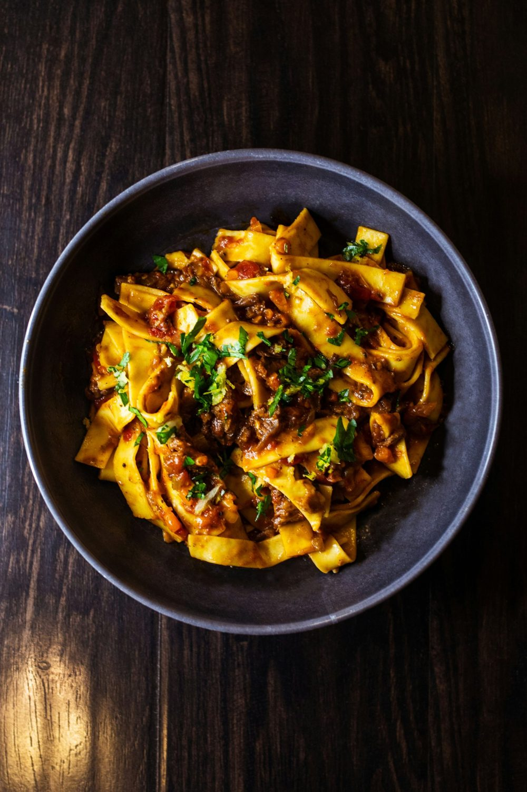

CiaoCucina
Cozinha italiana de mesa longa e prato pequeno. Doze lugares por noite, um menu que muda com a estação.

Uma mesa de família, servida com rigor
A Ciao Cucina nasceu da receita de ragù da nonna Concetta, em Milão, e chegou ao Brasil em 1987. Hoje, o chef Matteo Ferraro cozinha com massas feitas todas as manhãs, peixes do dia e azeites de pequenos produtores da Toscana e da Puglia.
Cada serviço tem apenas doze lugares, para que você seja atendido sem pressa.
Cardápio da estação
Escolha à la carte ou peça o menu degustação de sete tempos, com harmonização de vinhos.
Avise a equipe sobre alergias ou restrições alimentares. Adaptamos os pratos sempre que possível.
Galeria
Pratos da casa e o ambiente do salão. Toque numa foto para ampliar.
O que dizem nossos clientes
★★★★★
“Fui pelo ragù e voltei pela massa fresca. O serviço é discreto, e a mesa de doze lugares faz o jantar parecer uma casa de família.”
★★★★★
“O tagliolini ao tartufo é o melhor prato de massa que comi este ano. O sommelier indicou um vinho perfeito para a mesa.”
★★★★★
“Comemoramos dez anos de casados. Tudo chegou no tempo certo, e o cannoli de sobremesa fechou a noite muito bem.”
Depoimentos fictícios, escritos para este projeto.
“Um bom prato italiano tem poucos ingredientes e nenhuma pressa.”Matteo Ferraro, chef e sócio
Reserve sua mesa
Atendemos de terça a domingo. Para grupos acima de seis pessoas, entre em contato por telefone.